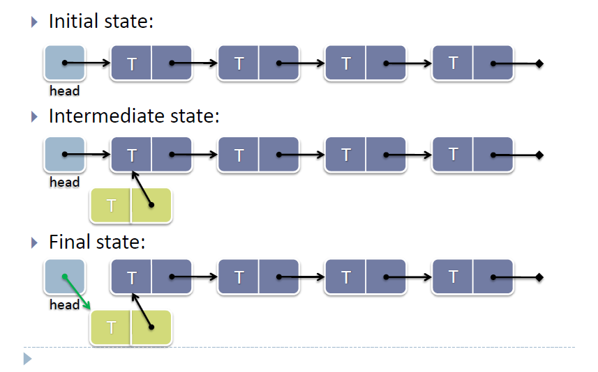
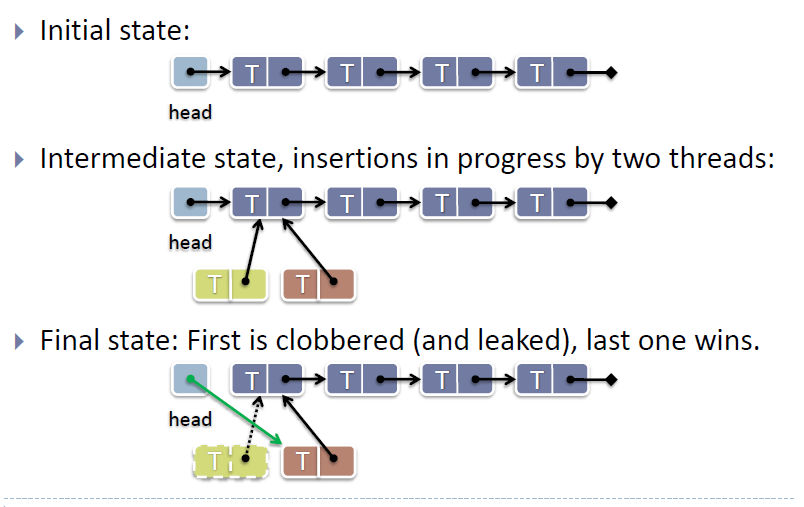

Writing a Lock-free Stack
Stack is a last in, first out(LIFO) data-structure. We will implement a linked list lock-free stack by using the C11 knowledge we learnt before.
Let's see the process of pushing a node into a stack.

This works fine in a single-threaded context, but if other threads are also modifying the stack, it’s not enough. Let's see what would happen if two threads push a node into the stack concurrently.

OK, so what can you do about this nasty race condition in a lock-free data-structure? The answer is to use an atomic compare and swap(CAS) operation to set the head node to point to your new node when CAS is sure that the head hasn’t been modified since you last read it. If it has, you can loop and try again.
stack.h
1 #include<stdio.h>
2 #include<stdatomic.h>
3 #include<stdlib.h>
4
5 //the node type in the stack
6 typedef struct _Node
7 {
8 int data;
9 struct _Node* next;
10 }Node;
11 //the stack
12 typedef struct _lfstack_t
13 {
14 Node *head;
15 }lfstack_t;
16
17 //the push function
18 void lfstack_push(_Atomic lfstack_t *lfstack, int value)
19 {
20 lfstack_t next;
21 lfstack_t orig = atomic_load(lfstack); //here we need a local copy of lfstack, however, lfstack is a pointer
22 //we could not get the content from a struct pointer atomically by assignment
23 //C11 provides us a function for us to atomically get the content from the location that
24 //a atomic type pointer points to.
25 Node *node = malloc(sizeof(Node)); //the new node, step 1
26 node->data = value;
27 do{
28 node->next = orig.head; //step 2
29 next.head = node; //local change of head
30 }while(!atomic_compare_exchange_weak(lfstack,&orig,next)); //if the lfstack is not changed by others, apply the local change of head to it
31 }
The pop function is also the same way of analyzing, and we let the analysis for students. Here is the pop function:
stack.h
1 //pop function
2 int lfstack_pop(_Atomic lfstack_t *lfstack)
3 {
4 lfstack_t next;
5 lfstack_t orig = atomic_load(lfstack);
6 do{
7 if(orig.head == NULL) //return when the stack is empty
8 {
9 return -1;
10 }
11 next.head = orig.head->next; //set the head to the next node
12 }while(!atomic_compare_exchange_weak(lfstack,&orig,next)); //if the head of stack is not changed, update the stack
13 printf("poping value %d\n",orig.head->data); //just want to see the poping value.
14 free(orig.head); // free the poping node
15 return 0;
16 }
Next, we put the lock-free stack in a multi-threading environment to be accessed as a shared data-structure.
main.c
1 #include "stack.h"
2 #include <stdio.h>
3 #include <pthread.h>
4 _Atomic lfstack_t top = {NULL};
5 void *push(void *input)
6 {
7 for(int i=0; i<100000; i++)
8 {
9 lfstack_push(&top, i);
10 printf("push %d\n",i);
11 }
12 pthread_exit(NULL);
13 }
14
15 void *pop(void *input)
16 {
17 for(int i=0; i<100000;)
18 {
19 int result;
20 result = lfstack_pop(&top);
21 if(result == -1)
22 printf("the stack is empty\n");
23 else
24 {
25 i++;
26 }
27
28 }
29 pthread_exit(NULL);
30 }
31 int main()
32 {
33 pthread_t tid[200];
34 for(int i=0; i<100; i++)
35 pthread_create(&tid[i],NULL,push,NULL);
36 for(int i=100; i<200; i++)
37 pthread_create(&tid[i],NULL,pop,NULL);
38 for(int i=0; i<200; i++)
39 pthread_join(tid[i],NULL);
40 return 0;
41 }
Actually, the print statement is not run together after they push/pop a node, so you may not see the print results as a LIFO logic, but I think you could understand it. We should compile the program by using the command:
gcc -std=c11 -pthread -o main main.c
The program seems perfect, but the program will abort when you run it. Here is a underlying problem that you may not notice, it is called ABA problem and I will introduce it to you next.